The Facebook Lead Ads integration allows you to collect leads directly from Facebook Ads and have them automatically synced with your CRM. With this integration, you can easily capture contact information from potential customers interested in your products or services on Facebook and quickly follow up with them through your CRM. By automating the lead capture process, you can save time and improve the efficiency of your sales and marketing efforts.
Covered in this Article:
What is the Facebook Lead Ads Integration?
Who is this integration helpful for?
What are the benefits of this integration?
Pre-requisites for Facebook Lead Ads
Supported custom fields when using Facebook Lead Ads:
How to directly integrate Facebook Leads Ads with a Sub-Account
Troubleshooting
Why are my Lead Ads not making it into my Sub-Account?
How do I integrate Facebook Leads using a 3rd party service like Pabbly Connect or Zapier?
Common Errors
Page Quality Issue :
Permission Issue:
Instagram Connection/messages Check:
Messenger/ Instagram not syncing all messages:
Leads, not syncing Issue:
How to connect Instagram Account to the FB page or verify it is connected:
What is the Facebook Lead Ads Integration?
The Facebook Lead Ads integration with a CRM (Customer Relationship Management) system allows businesses to capture and automatically import leads generated through Facebook Ads into their CRM system. This integration enables businesses to streamline their lead capture process, avoid manual data entry errors, and follow up with leads more efficiently. By integrating Facebook Lead Ads with a CRM, businesses can track and manage their leads through a single platform, which can improve Lead quality, increase conversions, and ultimately help grow their business.
Who is this integration helpful for?
The Facebook Lead Ads integration with a CRM can be beneficial for any business or organization that is using Facebook Ads to generate leads and wants to streamline their lead capture process. It can benefit small businesses or startups that may not have a large sales or marketing team to collect and manage leads manually. By automating the lead capture process, businesses can save time and resources while improving their lead data's accuracy and quality. Additionally, the integration can benefit businesses already using a CRM by seamlessly integrating their Facebook lead data into their existing workflows and follow-up processes.
What are the benefits of this integration?
The benefits of integrating Facebook Lead Ads with the CRM include:
Automated lead capture: With this integration, businesses can automatically capture leads generated through Facebook Ads and import them into their CRM system, eliminating the need for manual data entry.
Improved Lead Quality: By tracking and managing leads through CRM, businesses can better understand their audience, personalize their marketing efforts, and improve the overall quality of their leads.
Enhanced lead management: The CRM system allows businesses to track and manage their leads in one place, providing a 360-degree view of their interactions with prospects and customers. This can help companies to streamline their sales and marketing efforts and improve customer retention.
Efficient follow-up: With lead data automatically captured and imported into the CRM system, businesses can quickly follow up with leads and prioritize their sales efforts based on lead quality and behavior.
Increased conversions: Businesses can increase their conversions and ROI from Facebook Ads by automating lead capture and improving lead management.
Pre-requisites for Facebook Lead Ads
- LeadConnector will need access to the Facebook Business Manager and Business Page where you are running the Facebook Lead Ad from
- The user trying to integrate the Facebook Page into the CRM will need to be an admin of the Facebook Business page and have Lead Access Permission to access Lead data (A requirement set by Facebook).
- If you have moved your page to the New Pages Experience, You can allow trusted people to manage some of your Facebook business pages. You can give some people access to certain parts of your Facebook page without giving them full access.
- Open business manager > Left navigation > Users > People. If you have added the person, who will be integrating the FB page to the CRM, there already: they will appear at the center of the page.will
Click on the name and see more details, like the role. The role needs to have Admin or Employee access.If you have not added them, Please follow the steps to add people/users first.
How to add users to your business?
Remember that this business manager role differs from Page Role; the Page Role must still be the Admin.
Please Note:The new Pages experience isn't available for all Pages yet. Some Pages you manage might still use the classic Pages experience. Learn more about classic Pages.
- When creating the custom fields for the Lead Ad in the CRM, please make sure to use the supported custom fields listed below:
Supported custom fields when using Facebook Lead Ads:
- TEXT
- LARGE_TEXT
- NUMERICAL
- PHONE
- MONETARY
- SINGLE_OPTIONS
- DATE
- DROPDOWN
- RADIO OPTIONS
- CHECKBOX

How to directly integrate Facebook Leads Ads with a Sub-Account
To integrate your Facebook Business Page with a Sub-Account, Navigate to Settings> Integrations>Click on Connect under "Connect your Facebook Account."
It will show you a popup asking you to choose which page to connect to. Choose the desired page and then your integration should be connected.
Navigate to Facebook form mapping. Settings> integrations > Facebook Form Field Mapping. And then map your desired Instant Form to the CRM

Please Note:
Only the User that integrated the FB page will be able to see that page in the dropdown of pages. They need to be the admin of that FB page to see it in the dropdown of pages and will no longer see other accounts' FB Pages in the list.

Troubleshooting
Why are my Lead Ads not making it into my Sub-Account?
- Are you an admin of the Facebook page - How to add an admin to my Business Manager
- Can you confirm that your Facebook ads manager selects the correct FB Lead Ad form and matches the one in your Sub-Account? - https://web.facebook.com/business/tools/ads-manager
- Now in your Sub-Account, check in settings> integrations > Facebook form fields mapping if there is a blue tick mark next to the form you have selected in ads manager.
- If you are, in fact, the FB Admin, can you try this to confirm if Lead Connector is accessible and can allow access to your page?

Link mentioned in the gif - https://www.facebook.com/settings?tab=business_tools&ref=settings
6. Once you have completed the steps in the video above, please use the Facebook leads ads testing tool to see if leads are now being added to your Sub-Account.
Choose the correct page and Form in the Lead Ad Testing Tool and hit Create Lead. Keep clicking on Track Status until you get a result. If you get a failure status, then proceed to the next step.

Please Note:
When testing are you able to locate the App ID 390181264778064
If the app ID does not show up or if the test fails, then LeadConnector does not have access. If that is the case please continue to the steps below.
Go to Business.Facebook.com, head to Business Settings >Integrations> Leads Access. Go to CRMs; if you do not find LeadConnector in the list, that is why the Lead Ads Test tool gave you the error "CRM Access has been revoked from Lead Access Manager."

Then go back to your CRM account> Settings> Integrations> Disconnect your Facebook Connection by clicking Connected. Reconnect your Connection by clicking Connect a Page and then choosing your page from the dropdown.

Once your page is reconnected, head back to Business.Facebook.com , head to Business Settings >Integrations> Leads Access. Go to CRMs. Click on Assign CRMs. Choose LeadConnector from the list and grant it access.
You can then run the Lead ADs Test Tool again; this time, Delete the already existing test lead in the tool and click Create Lead.
Upon a Success status in the lead ads testing tool, you will be able to see the test lead inside the Contacts tab in the CRM.

How do I integrate Facebook Leads using a 3rd party service like Pabbly Connect or Zapier?
You can use a 3rd parties integration tool like Zapier or Pabbly Connect; look for the leadConnector app.
Common Errors
Page Quality Issue :
- Users need to switch to the Facebook page on Facebook, Go to this link and raise a support ticket with Facebook if there is an issue.
- FB Support Doc:
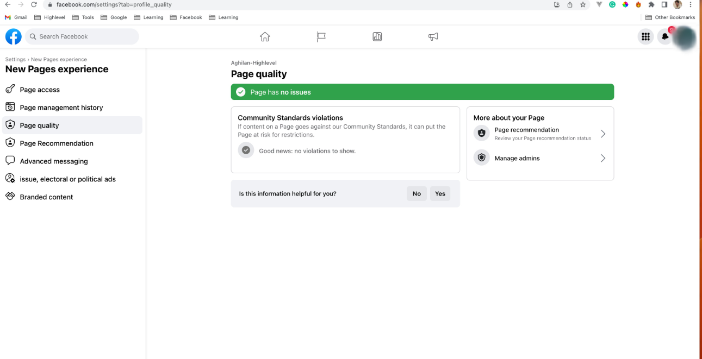
Permission Issue:
- Go to this link.
- And then this link
- Check if all the permission are enabled for all pages.
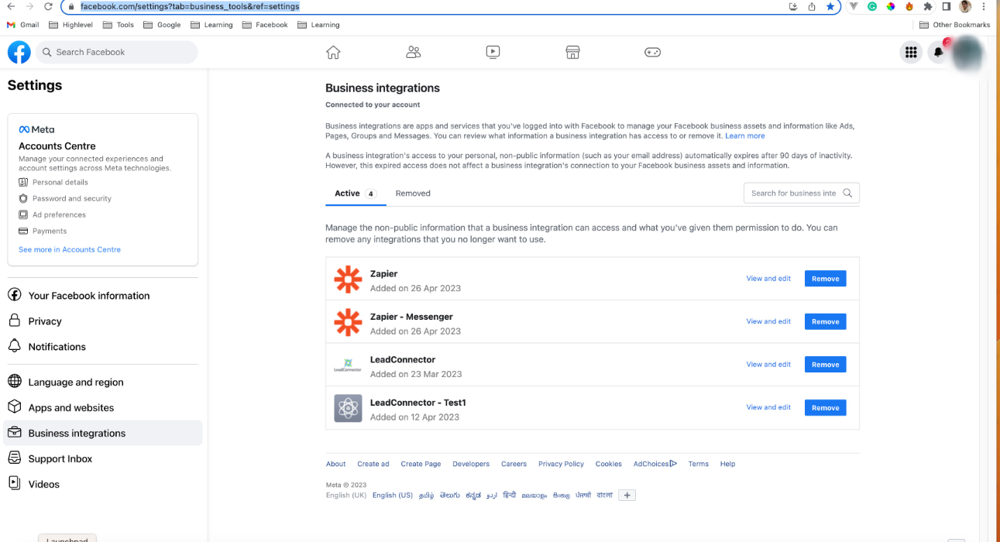
Instagram Connection/messages Check:
- Switch your logged-in user to the desired Fb page and go to this link.
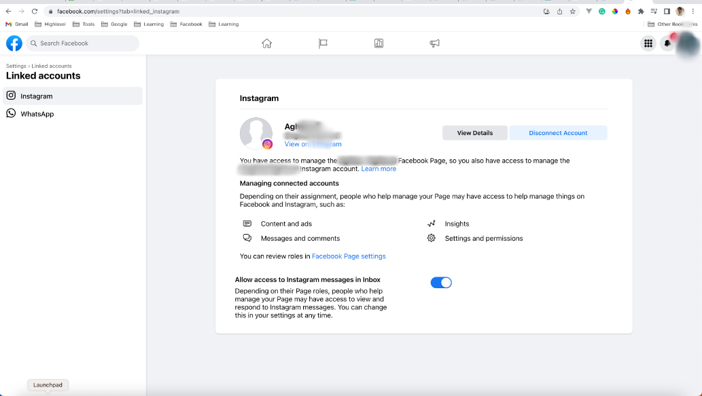
- Check if messaging is enabled.
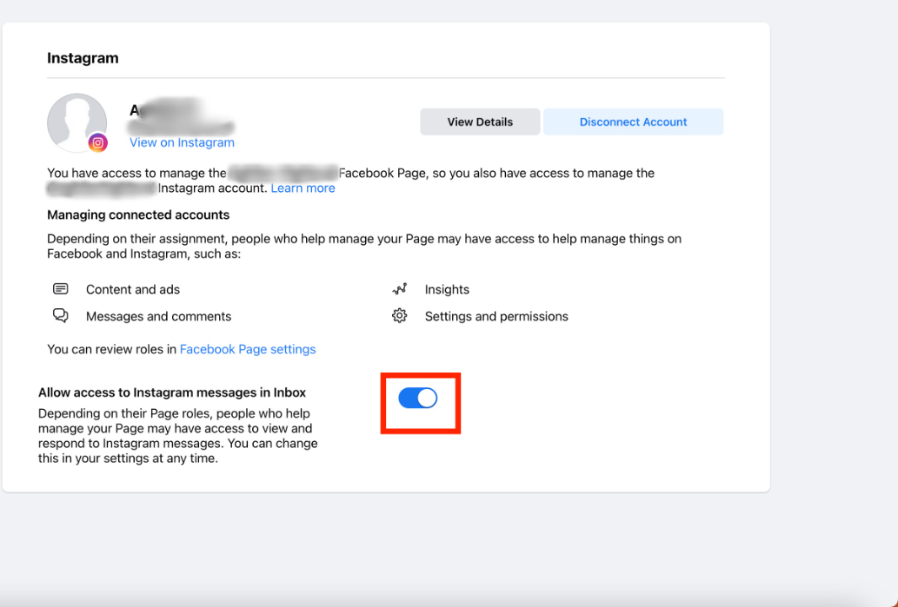
- If the page is connected, your IG page is still not visible as an option in your CRM. Please do a hard reset and then attempt to connect.
Messenger/ Instagram not syncing all messages:
- Switch to the desired FB page and go to this link
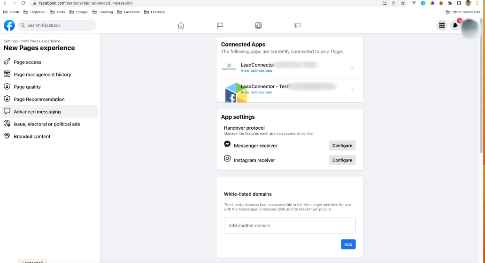
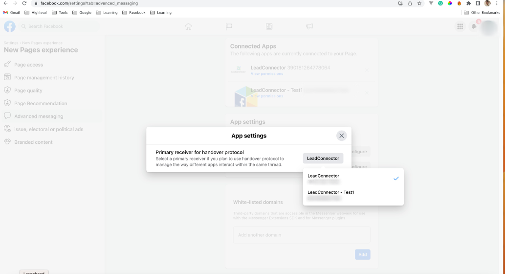
Leads, not syncing Issue:
- User Added to business(EMPLOYEE OR ADMIN)
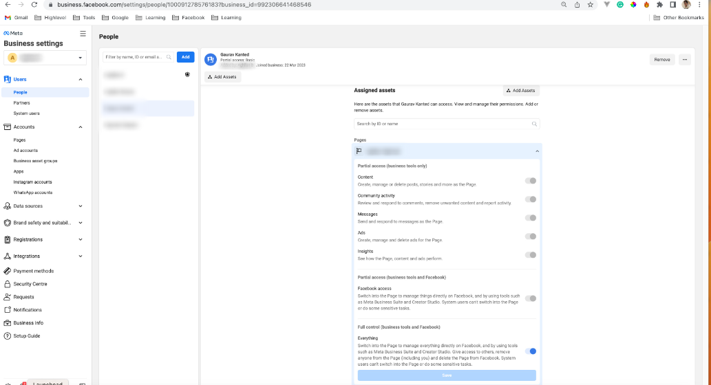
- FB Page Admin:
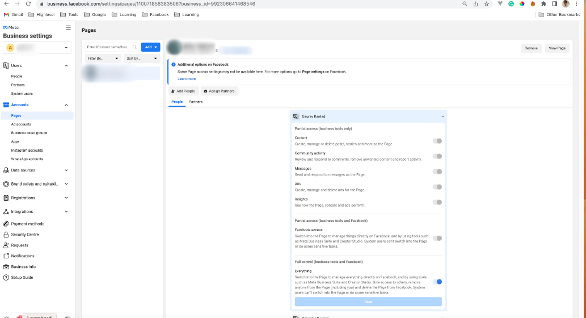
- Ad Account Check:
- Page Owner should Match with Ad Account Owner
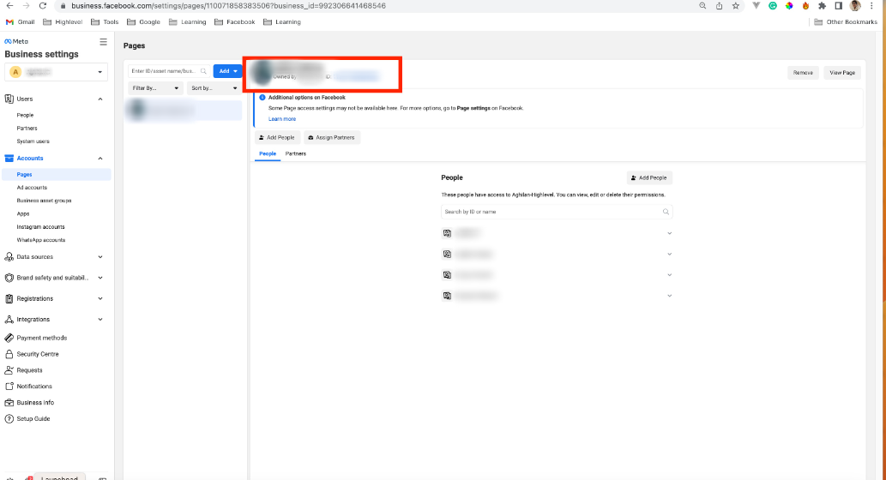
- Page Owner should Match with Ad Account Owner
- Integration Lead Access Check:
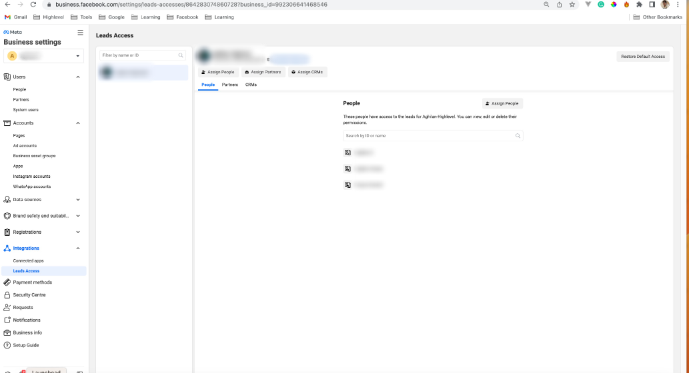
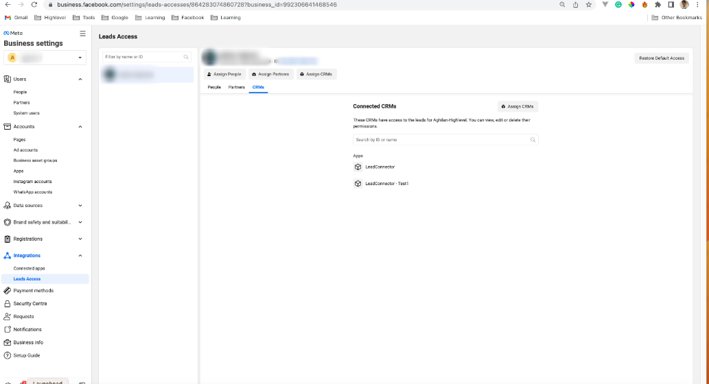
- If you are still not receiving the leads. Click on
Restore Default Accessit and check it again.
- If you are still not receiving the leads. Click on
How to connect Instagram Account to the FB page or verify it is connected:
Log in to Facebook and click Pages in the left menu.
Select your Facebook page(Switch to the FB page), then click Settings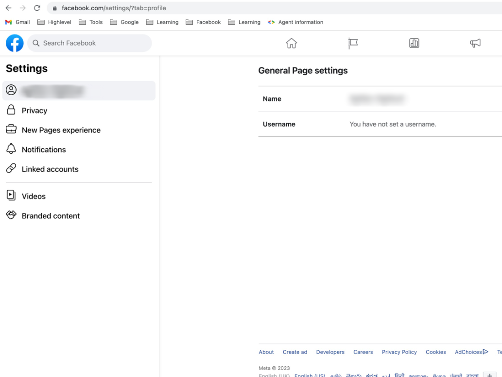
Select Linked Accounts in the left column.
Select Instagram, then connect your account.
If it is already connected, we can verify this.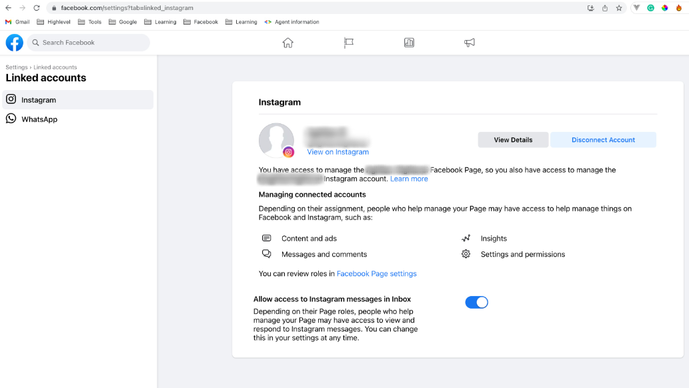
If it is not connected. It will show like below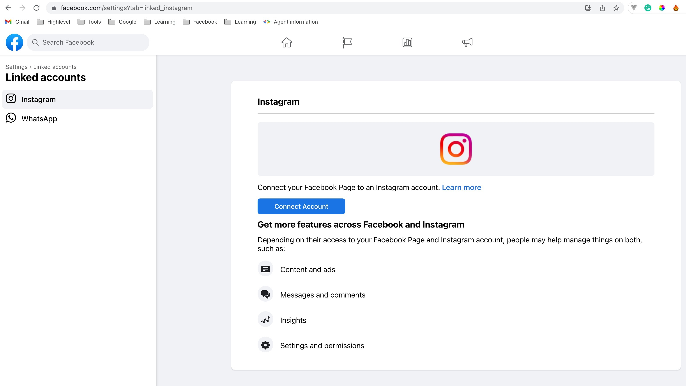